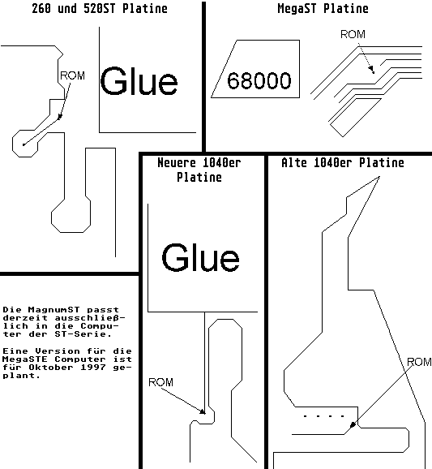

Previous
Next
TOC
Ist kein TOS 2.06 als Betriebssystem in Ihrem Rechner installiert,
so müssen die TOS-2.06-ROM-Bausteine in die zwei 32-poligen Fassun-
gen auf der MagnumST-Karte eingesetzt werden. Entfernen Sie die
vorhandenen TOS-ROM-Bausteine und löten Sie das Kabel von dem Punkt
ROM auf der MagnumST Karte an dem entsprechenden Punkt in Ihrem
Rechner an. Dies ist entweder die betreffende Leiterbahn laut
Skizze oder der Pin 19 am quadratischen Glue bzw. der Pin 14 wenn
der GLUE als SMD-Baustein im 80 poligen Flatpack Gehäuse vorhanden
ist, bzw. Pin 20 an der ROM-Fassung U4/U7 oder U9/U10.

Die Magnum belegt im Extremfall (bei 1MB ST-RAM) folgenden Speicher-
bereich:
$01000000 - $DFFFFFFF, $E8000000 - $EFFFFFFF, $F2000000 - $F9FFFFFF
$E0000000-$E7FFFFFF ist für die TOS-ROMs (die Magnum kann 512K, für
Magic+TOS zugleich). Ab $FA ist Romport, ab $FC TOS und $FF ist I/O
(da gibt es ein paar kleine freie Bereiche).
Bezugsquelle: Aixit GmbH, Hüttenstrasse 46, 52068 Aachen
Tel.: 0241/95807-0, Fax.: 0241/95807-17
http://www.aixit.com, EMailadresse: aixit@aol.com
Kapitel Die MagnumST Karte für alle ST Computer, Seite 4